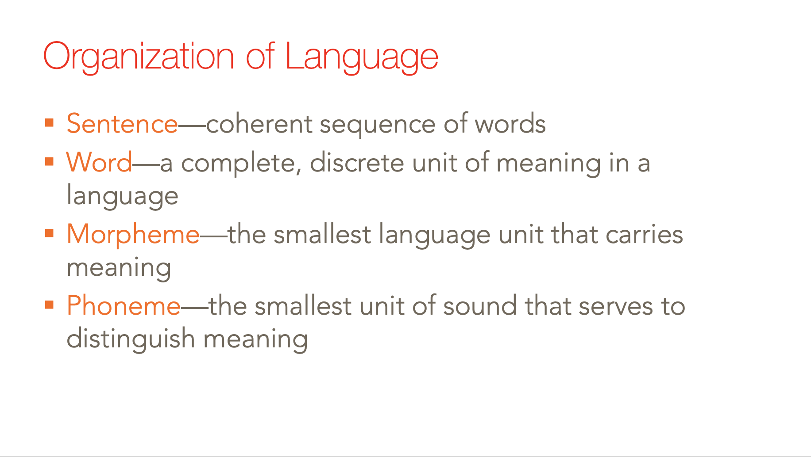
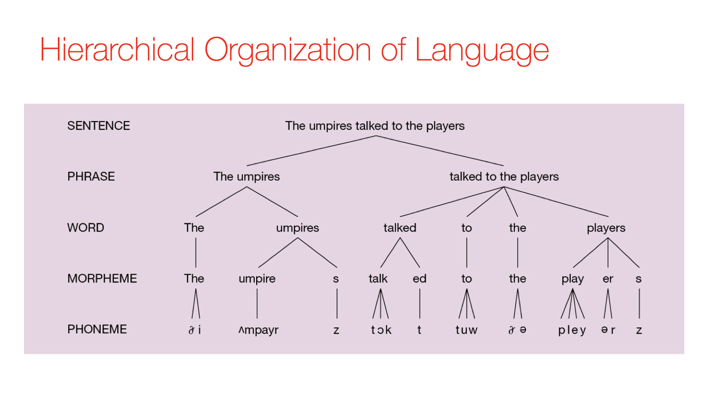
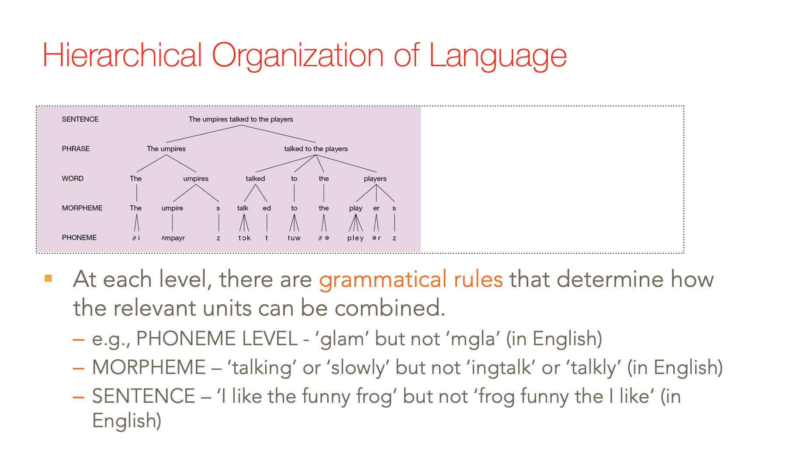
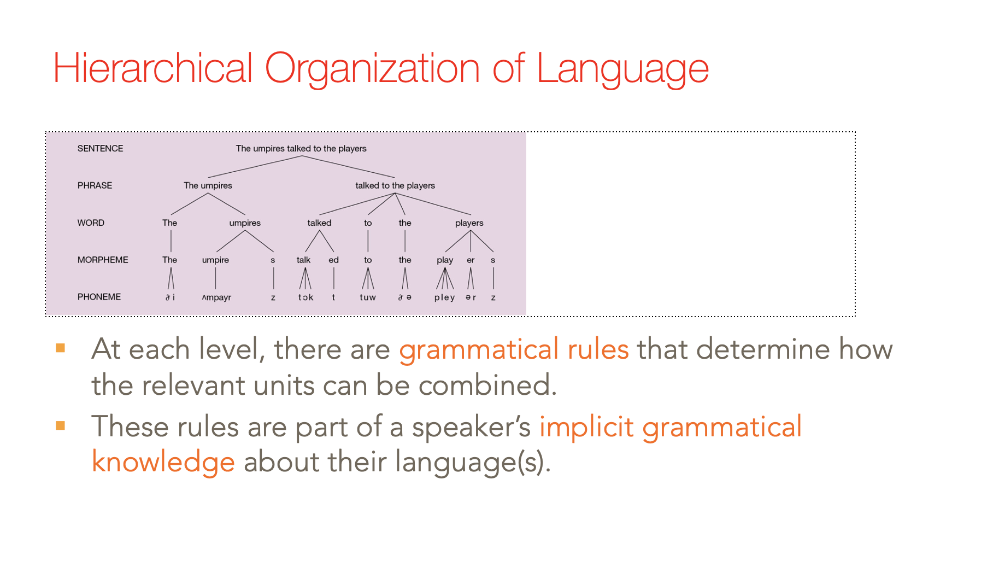
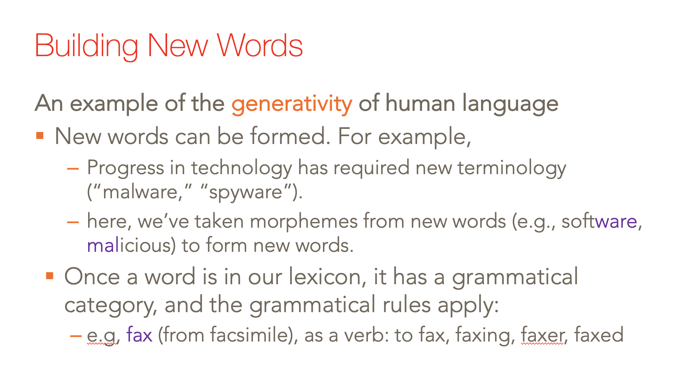
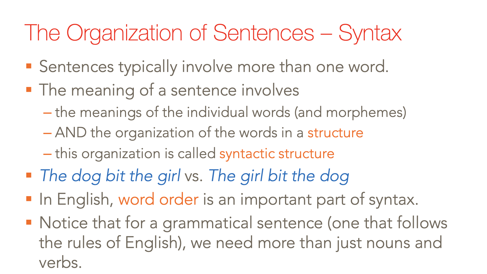
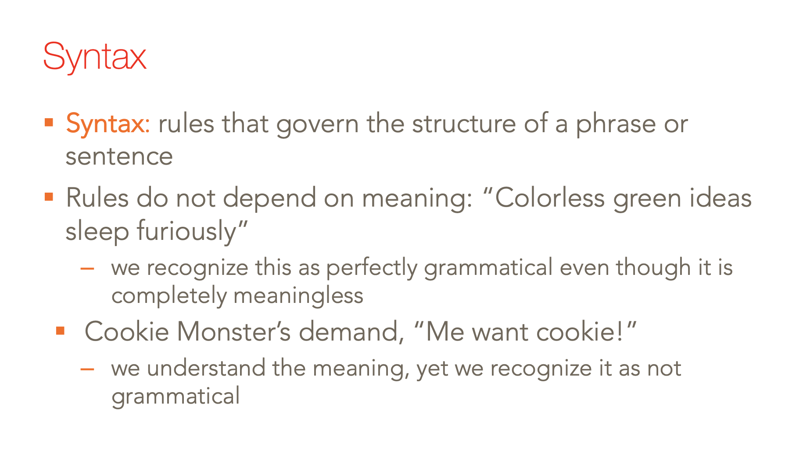
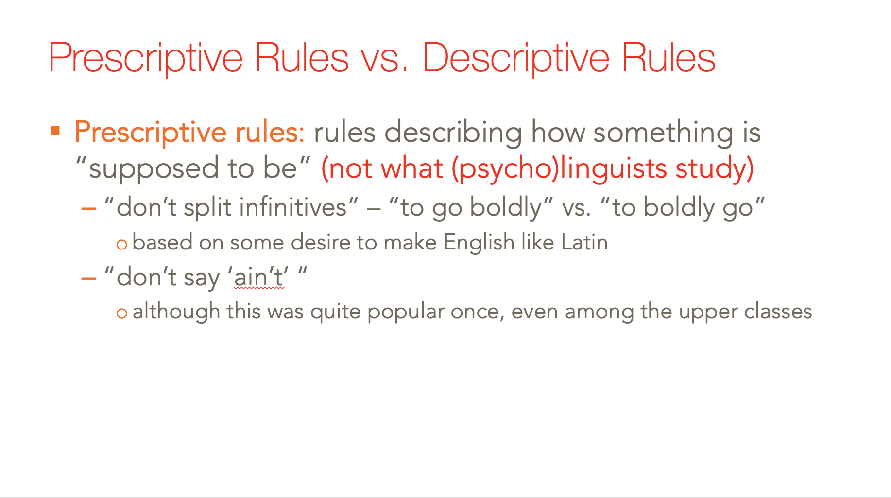
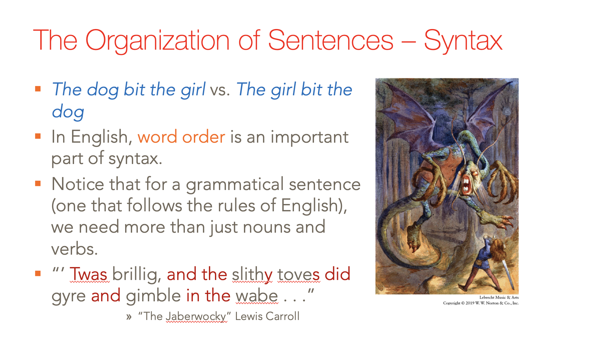

name: inverse layout: true class: center, middle, inverse --- template: inverse .pull-right[.image-70[]] # PHIL246: Foundations of Cognitive Science ### .red[4] Language (.red[Day 1]) ??? GIF credit: www.sergebloch.com ??? In the module on concepts, we spent a good amount of time talking about what concepts in a cognitive science are for, and what properties they have. We suggested, following Fodor, that the computational-representational theory of mind does a good job of guaranteeing that we have entities that do the right kinds of things. We presumed, there, that there is a tight relationship between WORDS and CONCEPTS, and between SENTENCES and THOUGHTS. CONCEPTS are the meanings of words, we said, and THOUGHTS are the meanings of sentences. Now, we can talk about language. Once we do, we find a couple of interesting tensions: 1- between whether language is FOR communication, or FOR thought 2- between whether language is WHOLLY modular, vs crucially implicated in CENTRAL SYSTEM processing, Etc. --- layout: false # Agenda: .red[Module 4] 0. .red[What is (human) language?] - Introduction - Who communicates, and how? - Properties of human language 1. What is it for? 2. How is it acquired? 3. What good is language? ??? In this module, we'll begin by warming you up to certain elementary questions and observations about human language, emphasizing its cognitive aspects to the necessary exclusion of its communicative aspects. We'll talk about what it's for, how it's acquired, and what it's good for. We'll dwell, in the end, on an intriguing possibility that is being explored more and more in the contemporary literature: that language, at the appropriate level of abstract, JUST IS the vehicle for domain-general thought. --- template: inverse # Introduction ??? Let's begin with an introduction by way of a series of questions. First, --- layout: false # What is .red[a] language? .footnote[https://www.linguisticsociety.org/content/how-many-languages-are-there-world] --- # What is .red[a] language? “a dialect with an army and a navy” (att. to M. Weinreich) .footnote[https://www.linguisticsociety.org/content/how-many-languages-are-there-world] ??? “What counts as a language rather than a ‘mere’ dialect typically involves issues of statehood, economics, literary traditions and writing systems, and other trappings of power, authority and culture — with purely linguistic considerations playing a less significant role.” --- # What is .red[a] language? “a dialect with an army and a navy” (att. to M. Weinreich) * “Chinese” glosses over Mandarin, Cantonese, Hakka, Shanghainese, which are as different from each other as French, Spanish, Italian, and Romanian are Hindi (India) and Urdu (Pakistan) are essentially the same system; at least, they are less different than Mandarin is from Cantonese * with the break-up of Yugoslavia, the language formerly known as Serbo-Croatian was replaced with at least three new ones (Serbian, Croatian, and Bosnian), though the linguistic facts didn’t change .footnote[https://www.linguisticsociety.org/content/how-many-languages-are-there-world] ??? “For instance, Chinese “dialects” such as Cantonese, Hakka, Shanghainese, etc. are just as different from one another (and from the dominant Mandarin) as Romance languages such as French, Spanish, Italian and Romanian. They are not mutually intelligible, but their status derives from their association with a single nation and a shared writing system, as well as from explicit government policy. In contrast, Hindi and Urdu are essentially the same system (referred to in earlier times as “Hindustani”), but associated with different countries (India and Pakistan), different writing systems, and different religious orientations. Although varieties in use in India and Pakistan by well-educated speakers are somewhat more distinct than the local vernaculars, the differences are still minimal—far less significant than those separating Mandarin from Cantonese, for example. For an extreme example of this phenomenon, consider the language formerly known as Serbo-Croatian, spoken over much of the territory of the former Yugoslavia and generally considered a single language with different local dialects and writing systems. Within this territory, Serbs (who are largely Orthodox) use a Cyrillic alphabet, while Croats (largely Roman Catholic) use the Latin alphabet. Within a period of only a few years after the breakup of Yugoslavia as a political entity, at least three new languages (Serbian, Croatian and Bosnian) had emerged, although the actual linguistic facts had not changed a bit. “ --- # .red[How many] are there? at least 55... --- # .red[How many] are there? .pull-right[.image-90[]] at least 55... ... in Italy ??? Source: https://www.ethnologue.com/country/IT/languages?ip_login_no_cache=%A6%B1%A9%0E%EA%F5%DCN&cache (Previous slides indicated 500 in Northern Italy alone, but that was an anecdote from a colleague and I haven't been able to dig up a source for that claim yet) --- # .red[How many] are there? "English" is (only) a useful fiction - Does *sorry* rhyme with *story* or with *Ferrari*? - Is *I'm done my homework!* grammatical, or not? - Is *Bruce be running marathons* grammatical, or not? --- # .red[How many] are there? linguists often cite as the only “scientifically respectable” answers... 1. There is **one** language—*human* (cf. Chomsky and the Martian scientist) 2. There are as many as there are people—**approx 7.53 billion** --- # What are the .red[prerequisites]? --- # What are the .red[prerequisites]? ### not “general smarts” <blockquote><b>Christopher</b> is "a man who lives in sheltered accommodation because he cannot look after himself, who cannot solve problems of the intellectual complexity of noughts and crosses (tic-tac-toe), but who can nonetheless read, write, speak, and understand some twenty or so languages." <b>Smith & Tsimpli 1995; Neil Smith 2003; from p23 of Lightfoot in A Cambridge Companion to Chomsky</b> </blockquote> --- # What are the .red[prerequisites]? ### not "close to human" smarts .pull-right[.image-100[]] <blockquote> Nim Chimpsky, adopted into a human environment when he was 3 months old, learned a number of different signs that he used to communicate with his human handlers—some estimates put it as high as 125. But even his staunchest advocate — Herbert Terrace, a psychology professor at Colombia — ultimately concluded that Nim's linguistic abilities were exceeded even by three year old human children. <b>Read "The troubled life of Nim Chimpsky", by Peter Singer</b> http://www.nybooks.com/blogs/nyrblog/2011/aug/18/troubled-life-nim-chimpsky/</blockquote> ??? In addition to Nim, there are many other examples: - Koko the Gorilla: https://www.youtube.com/watch?v=SNuZ4OE6vCk 3:35 - - Kanzi the Bonobo: https://www.youtube.com/watch?v=wRM7vTrIIis - Washoe the Chimpanzee - Chaser the Dog: https://www.youtube.com/watch?v=_6479QAJuz8 0:35 - 1:40 - Alex the Parrot --- # The case study of .red[Nim] .image-30[] .image-30[] .image-30[] .footnote[From the article "How Nim Chimpsky changed my mind"] ??? See also: comparative tests on a chimpanzee and a human infant: https://www.youtube.com/watch?v=pwRgUKRA2iU --- # Mean Length of Utterance (MLU) One way of measuring language development is to analyze the number of morphemes they produce (i.e., minimal meaning-bearing units; e.g., *went* has two, GO and PAST), divided by number of utterances. MLU = Total number of morphemes ------------------------- Total number of utterances A child's MLU typically corresponds closely to their age. Roger Brown (1973) described 5 stages of language development based on this measure. stage MLU approx. age (mos.) I 1.0-2.0 12-26 II 2.0-2.5 27-30 III 2.5-3.0 31-34 IV 3.0-3.75 35-40 V 3.75-4.5 41-46 V+ 4.5+ 47+ ??? What Terrace has in mind are data like this. Nim seemed not to have excelled past stage II. Year equivalents: 1-2 2 - 2 1/2 2 1/2 - 3 3 - 3 1/2 3 1/2 - 4 4+ --- # What are the .red[prerequisites]? ### being .red[**human**] <blockquote> Much of the grammatical knowledge displayed by a 20 year old is already in place by 4 years old for typically-developing children, regardless of wide variation in the social, cultural, geographical, and linguistic features of the child’s environment. <br /><br /> (To appreciate this point, don't confuse grammatical knowledge with lexical knowledge.) </blockquote> --- template: inverse # Human language is special ??? But, let's start at the beginning. What is so special about human language? In this module, we will explore the idea that what is special about it is its unique COGNITIVE effects, rather than its unique COMMUNICATIVE potential. This section aims to get at the ways in which we can OBSERVATIONALLY see that human language is rather unique in its particular combination of properties. Later, we will want to figure out the significance of these observations. --- # Who .red[communicates], and how? .red[Humans] can communicate in all sorts of ways: - Verbal/sign language - Written language - Body "language" - Facial expression - Emoji - Text message - Etc. ??? --- # Who .red[communicates], and how? Humans can communicate in all sorts of ways: - .red[Verbal/sign language] - Written language - Body "language" - Facial expression - Emoji - Text message - Etc. ??? ... We can ask some very simple questions to try and get at WHAT is special about verbal/sign language. --- class: center, middle # "SNAKE!" .image-80[] ??? The very FIRST thing we can observe about this ability is that if you see something, like a gigantic snake, you can SAY something informative about what you see—you can communicate, for example, that there's a snake. What might you do if you heard someone shout SNAKE in a room like this? --- class: center, middle # Vervet monkeys.red[*] <iframe title="YouTube video player" class="youtube-player" type="text/html" width="640" height="390" src="https://www.youtube.com/embed/3lsF83rHKFc?start=57&end=123&rel=0" frameborder="0" allowFullScreen></iframe> .footnote[.red[*] 0:57-2:23, https://www.youtube.com/watch?v=3lsF83rHKFc ] ??? This aspect of our language isn't very different. These monkeys ppear to be COMMUNICATING: if one sounds an alarm of a particular sort, the rest react appropriate to the danger being signaled. Further reading on "the semantics of vervet monkey calls": http://primatology.net/2011/03/09/the-semantics-of-vervet-monkey-alarm-calls-part-i/ --- class: center, middle ### "There's a snake two feet away from you on your left side!" .image-80[] ??? One thing that seems to differentiate human language from what the vervet monkeys are doing, is the level of SPECIFICITY to our speech. We don't just have the word "snake", we can say something about exactly where the snake is, for example. --- class: center, middle # Honeybees.red[*] <iframe title="YouTube video player" class="youtube-player" type="text/html" width="640" height="390" src="https://www.youtube.com/embed/-7ijI-g4jHg?start=0&end=50&rel=0" frameborder="0" allowFullScreen></iframe> .footnote[.red[*] 0:00-0:50, https://youtu.be/KRVxqCo9iW8 ] ??? But lest we think that this ability is unique in PRINCIPLE, consider the honeybees' "waggle" dance. More bees: http://www.pbs.org/wgbh/nova/bees/dances.html, https://www.youtube.com/watch?v=bFDGPgXtK-U, http://www.youtube.com/watch?v=4NtegAOQpSs --- # *Tanzsprache* ('Dance language').red[*] .image-90[] .footnote[.red[*] http://www.animalbehavioronline.com/frisch.html ] ??? There is much more to the bee's dance that this clip doesn't tell you about. There are actually two dances, and the bee can choose one depending on th edistance of the food source (up to 50 meters is the circle dance, Figure A). The vigorousness of the "straight run" part of the waggle dance (Figure B) signals the RICHNESS of the food source, and so on. What questions might you have about this ability that the bee has? Example: How is it acquired? Did the bee LEARN to do this dance? See also: - Prairie dogs (size, shape, speed, and type of predator; with humans, apparently even something about how they're dressed!) - Dolphins - whistles to indicate their name, age, gender See (to begin with) the ethologist and Nobel laureate Karl von Frisch's (Austrian biologist) famous work on the bee dance. --- # Noam Chomsky.red[*] ### "At least three theoretical issues cross-cut the debate on language evolution. .red[One of the oldest problems among theorists is the 'shared versus unique' distinction]. .footnote[.red[*] (Actually:) Hauser, Chomsky, and Fitch 2002, "The Faculty of Language: <br />What Is It, Who Has It, and How Did It Evolve?", <i>Science</i>'s Compass.] --- # Noam Chomsky.red[*] ### "At least three theoretical issues cross-cut the debate on language evolution. One of the oldest problems among theorists is the 'shared versus unique' distinction. Most current commentators agree that, .red[although bees dance, birds sing, and chimpanzees grunt, these systems of communication differ qualitatively from human language]. In particular, animal communication systems lack the rich expressive and open-ended power of human language..." .footnote[.red[*] (Actually:) Hauser, Chomsky, and Fitch 2002, "The Faculty of Language: <br />What Is It, Who Has It, and How Did It Evolve?", <i>Science</i>'s Compass.] ??? Here's a slightly more precise way of putting the question we're exploring right now: ... So, let us get a feel for the COMBINATION of properties that appear to distinguish human language. --- <img src="images/M4/s9.png" alt="drawing" style="width:110%;"/> --- <img src="images/M4/s11.png" alt="drawing" style="width:110%;"/> ??? Other things are uniquely human, like cooking, but not everyone cooks. --- # Yes, human language is .red[special] It has four properties, which .red[in combination] are unique in the animal kingdom: 1. Discreteness 2. Grammar 3. Productivity 4. Displacement ??? I'm going to explicate each of these points in turn. These notes based on a cute 5 minute intro slide to the differences between human and animal communication: http://ed.ted.com/lessons/do-animals-have-language-michele-bishop --- # Yes, human language is .red[special] It has four properties, which .red[in combination] are unique in the animal kingdom: 1. Discreteness - intuitively .red[the same] *b* and *t* in *bat* and *tab*, *anti* in *antichrist* and *antithesis*, &c 2. Grammar - these units combine by .red[rule]; such a hypothesis captures what is intuitively possible (*cat-[s]*) and not possible (*cat-[ez]*) 3. Productivity - the rules produce .red[an unbounded number of new expressions] out of more basic ones 4. Displacement - we can .red[talk about things very far] from our present experience, both in space and time, and about what's merely possible ??? First, an overview ---  ---  --- layout: false .left-column[ ## Properties of human language 1. .red[Discreteness] 2. Grammar 3. Productivity 4. Displacement ] .right-column[ At each level of analysis (.red[phonology], morphology, syntax), there are discrete units that can be combined to create different expressions. - .red[PHONEMES] ## bat ## tab ## but ## tub ] ??? PHONEMES --- layout: false .left-column[ ## Properties of human language 1. .red[Discreteness] 2. Grammar 3. Productivity 4. Displacement ] .right-column[ At each level of analysis (phonology, .red[morphology], syntax), there are discrete units that can be combined to create different expressions. - .red[MORPHEMES] ### establish ### matter ### anti-matter ### establish-ment ### anti-establish-ment ### anti-establish-ment-ari-an-ism ] ??? MORPHEMES From wikipedia: "Antiestablishmentarianism (or anti-establishmentarianism) is a political philosophy that views a nation's or society's power structure as corrupt, repressive, exploitive or unjust." --- layout: false .left-column[ ## Properties of human language 1. .red[Discreteness] 2. Grammar 3. Productivity 4. Displacement ] .right-column[ At each level of analysis (phonology, morphology, .red[syntax]), there are discrete units that can be combined to create different expressions. - .red[PHRASES] #### This is the house [that Jack built]. #### This is the malt [that lay in the house [that Jack built]]. #### This is the rat [that ate the malt [that lay in [the house [that Jack built]]]]. #### ... #### This is the horse and the hound and the horn that belonged to the farmer sowing his corn that kept the rooster that crowed in the morn that woke the judge all shaven and shorn that married the man all tattered and torn that kissed the maiden all forlorn that milked the cow with the crumpled horn that tossed the dog that worried the cat that killed the rat [that ate the malt [that lay in the house [that Jack built]]]. ] ??? PHRASES --- layout: false .left-column[ ## Properties of human language 1. Discreteness 2. .red[Grammar] 3. Productivity 4. Displacement ] .right-column[ Human .red[grammar] is a set of internalized rules (phonological, morphological, syntactic) that we use to combine these discrete units. ] --- layout: false .left-column[ ## Properties of human language 1. Discreteness 2. .red[Grammar] 3. Productivity 4. Displacement ] .right-column[ Human grammar is a set of internalized rules (.red[phonological], morphological, syntactic) that we use to combine these discrete units. #### How to .red[write] a plural noun: ## cat.red[s] ## car.red[s] ## house.red[s] ] ??? What's the rule here? "Add an -s". It's not AS straightforward when we turn to the actual sounds involved, however. --- layout: false .left-column[ ## Properties of human language 1. Discreteness 2. .red[Grammar] 3. Productivity 4. Displacement ] .right-column[ Human grammar is a set of internalized rules (.red[phonological], morphological, syntactic) that we use to combine these discrete units. #### How to .red[pronounce] a plural noun: ## cat-.red[[s]] ## car-.red[[z]] ## house-.red[[əz]] ## wug-.red[?] ] ??? Phonology governs how we TALK, not how we spell. Phonological rules are learned when we're a kid, and no teacher taught us how to talk. What evidence do we have for internalized rules? The WUG test. The "wug test" was first used by Jean Berko Gleason to illustrate that children really have internalized morphological rules. Read more: https://en.wikipedia.org/wiki/Jean_Berko_Gleason --- layout: false .left-column[ ## Properties of human language 1. Discreteness 2. .red[Grammar] 3. Productivity 4. Displacement ] .right-column[ Human grammar is a set of internalized rules (.red[phonological], morphological, syntactic) that we use to combine these discrete units. #### How to .red[pronounce] a plural noun: ## cat-.red[[s]] ## car-.red[[z]] ## house-.red[[əz]] ## wug-.red[[z]] ] --- layout: false .left-column[ ## Properties of human language 1. Discreteness 2. .red[Grammar] 3. Productivity 4. Displacement ] .right-column[ Human grammar is a set of internalized rules (.red[phonological], morphological, syntactic) that we use to combine these discrete units. #### How .red[not] to pronounce a plural noun: ## * cat-.red[[əz]] ## * car-.red[[s]] ## * catch-.red[[z]] ## * wug-.red[[əz]] ] ??? In fact, often what makes foreign languages SOUND foreign is that they're attempting to produce English sentences using a very different phonological system---they haven't mastered these implicit rules perfectly. --- layout: false .left-column[ ## Properties of human language 1. Discreteness 2. .red[Grammar] 3. Productivity 4. Displacement ] .right-column[ Human grammar is a set of internalized rules (phonological, .red[morphological], syntactic) that we use to combine these discrete units. #### How to form new words: ## un-happy ## happy-ly ## establish-ment ## anti-establish-ment ] --- layout: false .left-column[ ## Properties of human language 1. Discreteness 2. .red[Grammar] 3. Productivity 4. Displacement ] .right-column[ Human grammar is a set of internalized rules (phonological, .red[morphological], syntactic) that we use to combine these discrete units. #### How .red[not] to form new words: ## * happy-un ## * dis-happy ## * estab-ment-lish ## * establish-ment-anti ] ---  ---  --- layout: false .left-column[ ## Properties of human language 1. Discreteness 2. Grammar 3. .red[Productivity] 4. Displacement ] .right-column[ Because grammar involves discrete pieces that are combined by .red[rule] (rather than rote memorization), we can combine these pieces to create an infinite number of .red[new] messages. ] ??? Combinatorics in the wild (though, is there a "message"?): - White-eyed vireo: https://www.youtube.com/watch?v=bacpApp8Tzk 0:22-0:37 - Zebra finch: https://www.youtube.com/watch?v=TaC6D1cW1Hs 0:00-0:23 - Nightingale: https://www.youtube.com/watch?v=mw8hwxZJHsA 0:20-0:42 Relevant Nature article: http://www.nature.com/nature/journal/v498/n7452/full/nature12173.html --- layout: false .left-column[ ## Properties of human language 1. Discreteness 2. Grammar 3. .red[Productivity] 4. Displacement ] .right-column[ Because grammar involves discrete pieces that are combined by .red[rule] (rather than rote memorization), we can combine these pieces to create an infinite number of .red[new] messages. ## .red[Benjamin, take that squirrel out of your sister's ear!] ] --- layout: false .left-column[ ## Properties of human language 1. Discreteness 2. Grammar 3. .red[Productivity] 4. Displacement ] .right-column[ Because grammar involves discrete pieces that are combined by .red[rule] (rather than rote memorization), we can combine these pieces to create an infinite number of .red[new] messages. ### 'Twas brillig, and the slithy toves ### Did gyre and gimble in the wabe; ### All mimsy were the borogoves, ### And the mome raths outgrabe..red[*] ] .footnote[.red[*] From Lewis Carroll's "Jabberwocky". ] ??? We don't store sentences whole, and then "look them up" when we need them. We actively assign meaning to novel sentences. And much of what makes grammar truly meaningful are the bits that we aren't used to thinking about. For instance, we can get meaning even in what is ultimately nonsense. Obviously, if you haven't read Lewis Carroll's *Alice's Adventures in Wonderland* and *Through the Looking Glass*, you should do so immediately. --- layout: false .left-column[ ## Properties of human language 1. Discreteness 2. Grammar 3. Productivity 4. .red[Displacement] ] .right-column[ We can use our language to talk about things that are .red[not of the here and now]. ] --- layout: false .left-column[ ## Properties of human language 1. Discreteness 2. Grammar 3. Productivity 4. .red[Displacement] ] .right-column[ We can use our language to talk about things that are not of the here and now. #### Talking about the here and now: ### We are in class. ### The lights are on. ### This is a slideshow. ### I'm wearing shoes. ] --- layout: false .left-column[ ## Properties of human language 1. Discreteness 2. Grammar 3. Productivity 4. .red[Displacement] ] .right-column[ We can use our language to talk about things that are not of the here and now. #### Talking about .red[what isn't], what will be, what could be ... ### We aren't outside. ### The lights will be off later. ### You might be enjoying this slideshow. ### If I was wearing sandals, my feet would be cold. ] ??? PRODUCTIVITY/DISPLACEMENT. We're not tied to talking about the here and now---we can talk about possible worlds as easily as actual ones. These are all really remarkable properties, surely AS remarkable as what the bee, for example, is doing. But we really don't know, yet, how it's possible. How should we proceed? As usual... --- ---  ---  ---  ---  --- <img src="images/M4/s40.png" alt="drawing" style="width:100%;"/> ---  --- template: inverse ## the study of the mind is an inquiry into certain aspects of the natural world ... we should investigate these aspects of the world as we do any others, .red[attempting to construct intelligible explanatory theories that provide insight and understanding] of phenomena that are selected to advance the search into deeper principles <br />.red[Chomsky (1993), quote from Stainton (2006), “Meaning and reference: Some Chomskian themes”] ??? Rough transcription from Q&A of Chomsky’s Linguistic Society of America plenary in 2013